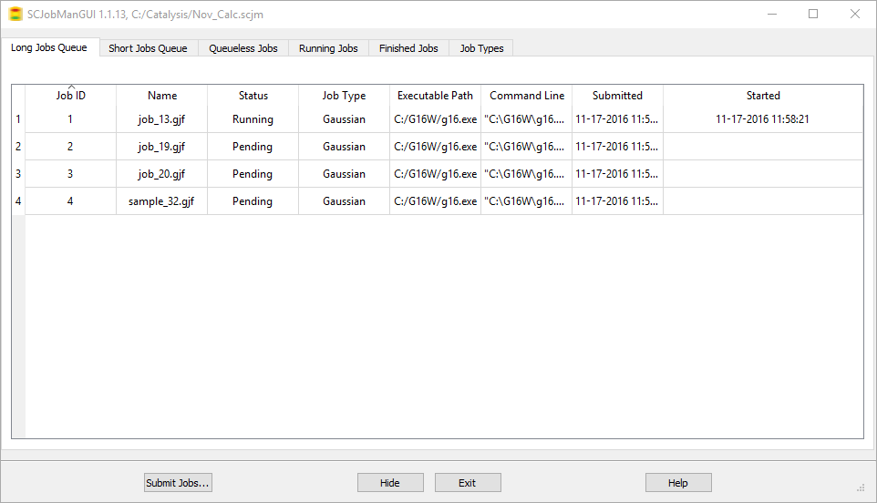
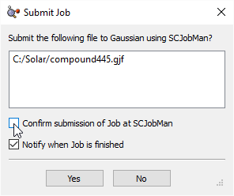
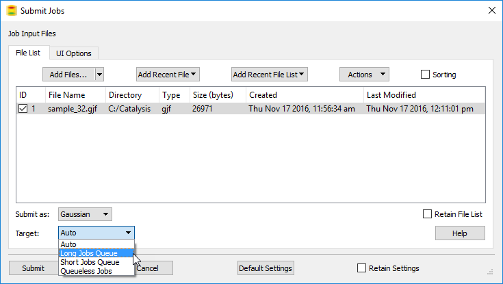
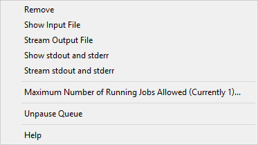
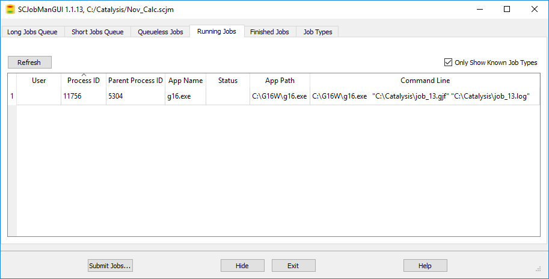
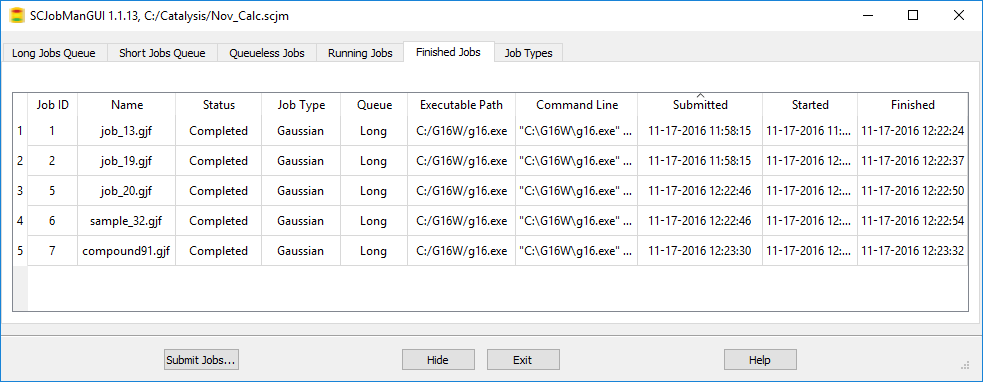
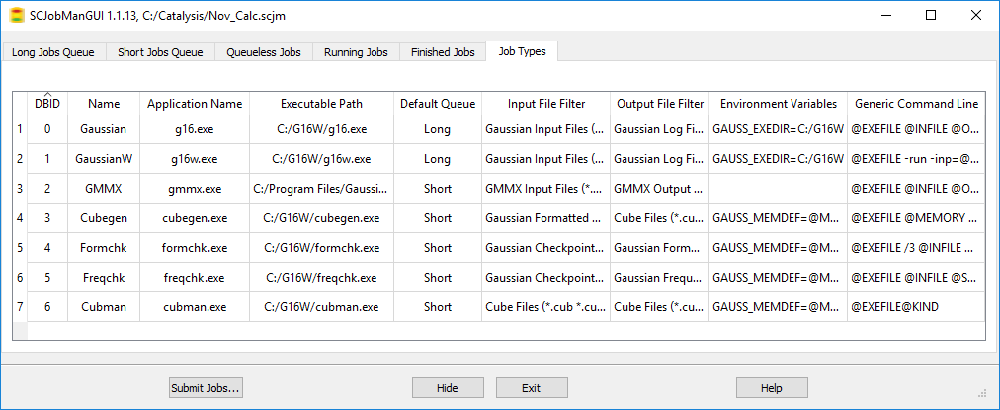
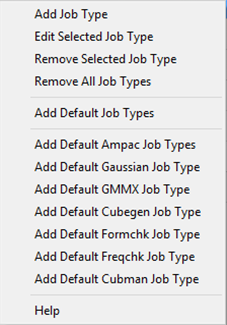
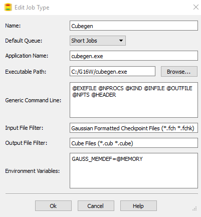
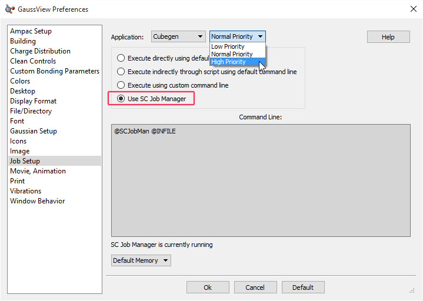

GaussView 6：任务管理与脚本（SC Job Manager）（p.214–226）¶
提交任务、SC Job Manager 各面板、任务类型（Job Types）、启用配置、命令行变量、自带脚本
原文件：
../gview6官方说明书.md（全量单文件存档）｜图片目录：../imgs/
SC Job Manager¶
SC Job Manager 是 GaussView 内置的一个简单排队系统。您可以通过计算（Calculate）=>SC Job Manager 菜单路径或相应的图标打开其控制对话框。该对话框如下图所示：
SC Job Manager。该对话框初始打开时显示长任务队列（Long Jobs Queue）面板。
从 GaussView 提交任务¶
当指定由 SC Job Manager 来运行 Gaussian 计算时，点击 Gaussian 计算设置（Gaussian Calculation Setup）对话框中的提交（Submit）按钮即开始提交任务的过程。首先，系统会要求您保存输入文件（如有必要）。接着，将出现以下确认对话框：
该对话框提供以下选项：


-
提交前自定义任务（即更改队列）：在 SCJobMan 处确认提交任务（Confirm submission of Job at SCJobMan）（默认：未勾选）。
-
请求在任务完成时通知：任务完成时通知（Notify when Job is finished）（默认：已勾选）。
默认情况下，任务会立即提交到默认的 SC Job Manager 队列，并在完成时通知您。
如果您勾选了上一个对话框中的上方复选框，GaussView 将显示如下对话框：
使用 SC Job Manager 时的提交任务（Submit Job）对话框 当您点击该对话框左下角的提交（Submit）按钮时，文件列表中已勾选的文件将被提交到指定的 SC Job Manager 队列。您可以使用此对话框修改默认任务类型和/或队列，还可以选择其他要提交的文件。
向文件列表添加文件¶
添加文件（Add Files）按钮会打开一个文件查看器（其形式在 UI 选项（UI Options）面板中指定），用于选择要添加到文件列表的文件。点击该按钮将打开最近使用过的目录。点击添加文件（Add Files）按钮右侧的下拉箭头，将打开一个菜单，允许用户选择要打开的目录。
添加最近文件（Add Recent File）按钮会创建一个下拉菜单，允许用户从以前打开过的文件中进行选择。
添加最近文件列表（Add Recent File List）按钮将显示一个下拉菜单，其中列出以前打开过的成组文件（在同一次打开操作中打开的文件）。
操作（Actions）按钮包含以下菜单项：
-
所选项（Selected Items）：选项仅应用于选定（高亮显示）的文件。
-
所有项（All Items）：选项应用于列表中的所有文件，无论是否选中。
上述每个菜单都包含以下条目：
-
清除（Clear）：此选项移除选定/所有文件。
-
勾选（Check）：此选项勾选选定/所有条目行首的复选框。勾选复选框即标记相应条目以便提交。

-
取消勾选（Uncheck）：此选项取消选定/所有条目复选框的勾选，从而取消选择它们（将其排除在提交之外）。
-
切换（Toggle）：此选项切换选定/所有条目复选框的当前状态。
排序（Sorting）复选框控制文件列表中的条目是否可以排序。勾选后，点击任意列标题即可根据该字段对条目排序。当前排序列顶部会出现一个脱字符 ^（升序）或一个“v”字符（降序）：
该对话框底部控件的用途如下：
-
提交为（Submit as:）下拉菜单指定将提交何种类型的任务。默认选择自动（Auto），任务类型根据文件扩展名确定。在上面的对话框中，选择了 Gaussian。
-
目标（Target:）下拉菜单允许您指定将任务添加到哪个 SC Job Manager 队列。
修改 UI 选项¶
UI 选项（UI Options）面板允许您设置以下选项：
-
使用本地文件浏览器（Use Native File Browser）：勾选后，GaussView 在向文件列表添加条目时将使用操作系统的本地文件浏览器。
-
若初始文件列表为空则以文件浏览器启动（Start with File Browser if Initial File List is Empty）：勾选后，当文件列表为空（即您正在打开新文件）时，GaussView 将自动打开文件浏览器，而不是文件列表（File List）面板。
-
文件列表详情（File List Detail）：以下选项用于在文件列表（File List）选项卡上显示文件信息。
-
低（Low）：仅显示关于所打开文件的最基本信息：分子组与结构（如有）、文件名和目录。
-
中（Medium）：显示关于所打开文件的更多信息：增加文件类型。
-
高（High）：显示所打开文件的最高详细程度：增加文件大小以及创建和修改日期。
-
允许重复文件（Allow Duplicate Files）：勾选此选项允许 GaussView 多次打开同一文件。若未勾选，则不允许将同一文件多次添加到文件列表。
SC Job Manager 对话框¶
SC 对话框有五个面板：
-
长任务队列（Long Jobs Queue）：长任务队列（Long Jobs Queue）是所有在提交任务（Submit Jobs）对话框中被指定到该队列的文件出现的位置。
-
短任务队列（Short Jobs Queue）：短任务队列（Short Jobs Queue）是所有在提交任务（Submit Jobs）对话框中被指定到该队列的文件出现的位置。
-
无队列任务（Queueless Jobs）：无队列任务（Queueless Jobs）队列是所有在提交任务（Submit Jobs）对话框中被指定到该队列的文件出现的位置。
-
运行中任务（Running Jobs）：此面板提供当前正在运行或排队等待运行的任务的信息。
-
已完成任务（Finished Jobs）：此面板提供已完成运行的任务的信息。
-
任务类型（Job Types）：此面板提供可使用 SC Job Manager 运行的任务类型的信息。
此控制面板中的各个面板将在下面几个单独章节中讨论。
该对话框底部按钮的含义如下：
-
提交任务（Submit Jobs）：此按钮将打开提交任务（Submit Jobs）对话框。
-
隐藏（Hide）：此按钮将隐藏 SC Job Manager 视图，但不会停止正在运行的任务，并将继续运行已排队的任务。
-
退出（Exit）：此按钮将关闭 SC Job Manager。当前正在运行的任务将继续，但不会启动新任务。如果不退出 SC Job Manager，即使 GaussView 关闭，它仍将作为单独进程继续运行，继续处理任务。
退出 SC Job Manager¶
当您选择退出（Exit）时，将出现提示，询问您是否希望完全退出 SC Job Manager。点击是（Yes）将提示保存当前 SC Job Manager 项目。为该文件选择任何方便的目录位置即可。选择否（No）将丢弃自上次打开 SC Job Manager 以来生成的关于已完成、运行中和待处理任务的所有数据。
当您在保存数据后重新启动 SC Job Manager 时，所有先前待处理的任务都将出现在队列中。曾容纳在 SC Job Manager 退出时正在运行的任务的队列将被暂停，先前运行中的任务将被列为待处理。
长任务队列（Long Jobs Queue）、短任务队列（Short Jobs Queue）和无队列任务（Queueless Jobs）面板¶
SC Job Manager。与排队任务和无队列任务对应的面板都包含针对相关任务的相同控件和信息。
队列面板显示 SC Job Manager 当前控制的任务。各任务列表中的字段包含以下信息：
-
任务 ID（Job ID）：这是赋予任务的 ID。SC Job Manager 中的任务跨队列从 1 开始顺序编号。
-
名称（Name）：这是任务文件的名称。

-
状态（Status）：此字段指定任务正在运行还是排队等待将来运行。请注意，已完成的任务不会出现在此列表中。
-
任务类型（Job Type）：此字段指定任务的类型。
-
可执行文件路径（Executable Path）：此字段显示用于运行任务的程序。
-
命令行（Command Line）：此字段显示用于运行任务的命令行。
-
已提交（Submitted）：此字段给出任务提交到 SC Job Manager 的时间和日期。
-
已启动（Started）：此字段给出任务启动的时间和日期。
双击文件列表中与正在运行的任务对应的条目，将实时输出（stream）该任务的输出。双击待处理的任务将打开该任务的输入文件。
在任务列表中的条目上点击右键会打开上下文菜单：
上下文菜单上的条目含义如下：
-
移除（Remove）：从队列中移除所选任务。如果任务正在运行，则在确认提示后停止该任务。
-
显示输入文件（Show Input File）：显示所选任务输入文件的内容。
-
实时输出文件（Stream Output File）：在任务运行时实时输出输出文件，以便观察其进度。
-
显示 stdout 和 stderr（Show stdout and stderr）：显示来自操作系统的当前标准输出和标准错误数据。数据不会刷新。
-
实时输出 stdout 和 stderr（Stream stdout and stderr）：实时输出来自操作系统的标准输出和标准错误流。
-
允许的最大运行任务数（目前为 1）…（Maximum Number of Running Jobs Allowed (Currently 1)...）：允许您更改每个队列中一次可运行的任务数量。默认值为 1。
以下条目仅出现在队列的上下文菜单中：
-
最大数量（Maximum Number）：指定 SC Job Manager 一次可运行的任务数量。默认设置为 1。
-
暂停队列（Pause Queue）：暂停当前任务队列，阻止启动更多任务，但不会结束当前正在运行的任务。
运行中任务（Running Jobs）面板¶
选择运行中任务（Running Jobs）面板将显示如下对话框：

SC Job Manager：运行中任务（Running Jobs） 各字段的含义如下：
-
用户（User）：此字段显示运行任务的用户。
-
进程 ID（Process ID）：此字段显示底层操作系统分配给任务的操作系统进程 ID。
-
父进程 ID（Parent Process ID）：此字段显示任务父进程的操作系统进程 ID。
-
应用名称（App Name）：此字段显示用于运行任务的应用程序名称。
-
状态（Status）：此字段显示任务的当前状态。
-
应用路径（App Path）：此字段显示用于运行任务的应用程序路径。
-
命令行（Command Line）：此字段显示用于运行任务的命令行。
刷新（Refresh）按钮将更新任务列表，以反映所有任务的当前状态。
仅显示已知任务类型（Only Show Known Job Types）复选框将显示限制为任务类型（Job Types）面板上列出的任务类型。若未勾选，则显示当前用户的所有进程。
双击文件列表中的条目将实时输出该任务的输出。在条目上点击右键将允许您移除它（即终止该任务）。
已完成任务（Finished Jobs）面板¶
选择已完成任务（Finished Jobs）面板将显示如下对话框：

SC Job Manager：已完成任务列表 各列包含以下信息：
-
任务 ID（Job ID）：这是赋予正在运行的任务的 ID，从 1 开始顺序编号。任务清除后，该任务 ID 号将被重用。
-
名称（Name）：这是正在运行的文件的名称，包括其文件扩展名。
-
状态（Status）：此字段指定当前的任务状态。此处可能出现几种不同的状态。已完成（Completed）表示任务成功结束，可以打开输出文件。失败（Failed）表示任务出现问题并停止运行，可能产生部分输出文件，也可能没有。崩溃（Crashed）表示任务失败且无输出（通常在计算开始前）。已终止（Killed）表示任务被用户停止。
-
任务类型（Job Type）：此字段指定任务的类型。
-
队列（Queue）：此字段显示任务在哪个队列中运行。
-
可执行文件路径（Executable Path）：此字段显示用于运行任务的程序。
-
命令行（Command Line）：此字段显示用于运行任务的完整命令行。
-
已提交（Submitted）：此字段给出任务提交到 SC Job Manager 的时间和日期。
-
已启动（Started）：此字段给出任务启动的时间和日期。
-
已完成（Finished）：此字段给出任务完成的时间和日期。
双击文件列表中的条目将尝试打开该任务的输出文件。
点击右键将显示队列面板上下文菜单的精简版本。它包含以下选项：
-
移除（Remove）：此按钮将从列表中移除该文件。
-
显示输入文件（Show Input File）：此按钮显示用于运行任务的输入文件。
-
显示输出文件（Show Output File）：此按钮显示已完成任务的输出文件。
-
显示 stdout 和 stderr（Show stdout and stderr）：此按钮显示来自操作系统的标准输出和标准错误流。
任务类型（Job Types）面板¶
选择任务类型（Job Types）选项卡将显示如下对话框：

表中各列的含义如下：
-
DBID：这是任务类型的数据库 ID（与任务本身的编号相互独立）。
-
名称（Name）：这是用于运行任务的应用程序的显示名称。
-
应用程序名称（Application Name）：这是用于运行任务的应用程序可执行文件的文件名。
-
可执行文件路径（Executable Path）：显示可执行文件的路径。
-
默认队列（Default Queue）：显示此任务类型默认使用的队列。
-
输入文件过滤器（Input File Filter）：指定此任务类型使用的输入文件类型。
-
输出文件过滤器（Output File Filter）：指定此任务类型产生的输出文件类型。
-
环境变量（Environment Variables）：与此任务类型相关的环境变量。
-
通用命令行（Generic Command Line）：用于启动此任务类型的命令行模板。这在任务设置首选项（Job Setup Preferences）中定义。
在任务类型（Job Types）对话框中的条目上点击右键会显示该面板的上下文菜单，如上图所示：
- 添加任务类型（Add Job Type）：允许您向列表添加新的任务类型。


-
编辑所选任务类型（Edit Selected Job Type）：允许您编辑任务类型（见下文）。
-
移除所选任务类型（Remove Selected Job Type）：从当前列表中移除所选任务类型。
-
移除所有任务类型（Remove All Job Types）：移除当前列表中的所有任务类型。
-
添加默认任务类型（Add Default Job Types）：此选项添加 SCJM 启动时的所有默认任务类型。
-
添加默认 Ampac 任务类型（Add Default Ampac Job Types）：此选项添加默认 Ampac 任务。
-
添加默认 Gaussian 任务类型（Add Default Gaussian Job Types）：此选项添加默认 Gaussian 任务。
-
添加默认 GMMX 任务类型（Add Default GMMX Job Types）：此选项添加默认 GMMX 任务。
-
添加默认 Cubegen 任务类型（Add Default Cubegen Job Types）：此选项添加默认 Cubegen 任务。
-
添加默认 Formchk 任务类型（Add Default Formchk Job Types）：此选项添加默认 Formchk 任务。
-
添加默认 Freqchk 任务类型（Add Default Freqchk Job Types）：此选项添加默认 Freqchk 任务。
-
添加默认 Cubman 任务类型（Add Default Cubman Job Types）：此选项添加默认 Cubman 任务。
编辑任务类型¶
通过点击上下文菜单中的编辑所选任务类型（Edit Selected Job Type）选择此选项。如下所示：
示例任务类型：Cubegen 任务 该对话框包含以下字段：
-
名称（Name）：这是用于运行任务的应用程序的显示名称。
-
默认队列（Default Queue）：显示此任务类型默认使用的队列。
-
应用程序名称（Application Name）：这是用于运行任务的应用程序的程序名。
-
可执行文件路径（Executable Path）：显示应用程序所在的路径。
-
通用命令行（Generic Command Line）：用于启动此任务类型的命令行模板。这在任务设置首选项（Job Setup Preferences）中定义。
-
输入文件过滤器（Input File Filter）：指定此任务类型使用的输入文件类型。
-
输出文件过滤器（Output File Filter）：指定此任务类型产生的输出文件类型。

- 环境变量（Environment Variables）：与此任务类型相关的环境变量。
注：此功能仅应由对运行 Gaussian 及其工具程序有详细了解的人员使用。如果您不确定这些选项是什么，建议不要使用编辑任务类型（Edit Job Type）对话框。
启用 SC Job Manager 的使用¶
在任务设置首选项（Job Setup Preferences）中为一个或多个应用程序选择使用 SC Job Manager（Use SC Job Manager），以启用此功能。
为 Cubegen 任务启用 SC Job Manager
任务设置首选项（Job Setup Preferences）对话框允许您查看和自定义如何从 GaussView 内启动 Gaussian 及其工具程序。如下图所示。面板顶部的应用程序（Application）字段指定当前显示其执行方式的程序或工具程序。在此弹出框下方是启动选项，所选启动方式关联的命令行显示在命令行（Command Line）区域。出于方便，在该字段下方显示了命令行中使用的 GaussView 内部变量的值。

任务设置首选项（Job Setup Preferences） 本例选择通过命令行在本地计算机上直接运行 Gaussian。灰色 方框显示用于此目的的命令（可以编辑）。命令行中使用的变量——大写、以 @ 开头——的定义显示在命令行（Command Line）区域下方。
对于每种任务类型，有以下几种启动选项：
-
使用默认命令行直接执行（Execute directly using default command line）：任务将使用下方区域指定的命令行在本地系统上启动。
-
使用默认命令行通过脚本间接执行（Execute indirectly through script using default command line）：任务将使用 GaussView 提供的脚本在本地系统上启动。这些脚本位于 GaussView 安装目录的 bin 子目录中。其名称列在下文。关联的命令行出现在对话框下部区域。如有需要，您可以使用文本编辑器自定义脚本。若要使用其他脚本，请定义自定义命令行（见下一条）。
-
使用自定义命令行执行（Execute using custom command line）：使用方框中指定的命令行启动任务。您可以输入适合您情况的任何命令行。如有需要，可以调用 GaussView 提供的脚本。成功使用此功能取决于对当前操作系统下 Gaussian 及其工具程序命令行调用的清楚理解。详情请参阅《Gaussian 用户参考手册（Gaussian User’s Reference）》。
-
使用 SC Job Manager（Use SC Job Manager）：此功能在本文档中描述。
下图展示了使用第二种启动选项运行 Gaussian 程序时显示的命令行和其他信息：

通过外部脚本运行 Gaussian 本例来自 Windows 系统。其他系统类型上的变量定义有所不同。
可用的命令行变量¶
下表列出了用于访问可执行文件和脚本的变量：
其中一些条目为其命令行定义了额外的变量。其值由 GaussView 界面中的控件生成。关于各种工具程序参数的详情，请参阅《Gaussian 用户参考手册（Gaussian User’s Reference）》。
| 条目（Item） | 变量（Variable(s)） |
|---|---|
| 全部 | @INFILE：输入文件（在某些情况下使用多个带编号的输入文件变量） @OUTFILE：输出文件 |
| 条目（Item） | 直接执行（Direct Execution） | 脚本（Script） |
|---|---|---|
| Gaussian 程序 | @GXX (UNIX) @GXXW (Windows) |
@GXX_SCRIPT |
| CubeGen 工具程序 | @CUBEGEN | @CUBEGEN_SCRIPT |
| CubMan 工具程序 | @CUBMAN | @CUBMAN_SCRIPT |
| FormChk 工具程序 | @FORMCHK | @FORMCHK_SCRIPT |
| FreqChk 工具程序 | @FREQCHK | @FREQCHK_SCRIPT |
| GMMX 功能 | @GMMX | @GMMX_SCRIPT |
| Gaussian 帮助 | @BROWSER | @GAUSSIANHELP_SCRIPT |
| 文本编辑器 | @SCFILEEDITOR | @SCFILEEDITOR_SCRIPT |

大多数工具程序
-
@MEMORY：要使用的内存量，通过对话框底部的字段指定：
-
CubeGen：@KIND：cube 文件类型；@NPTS：每“边”的点数；@HEADER：是否包含标题行
-
CubMan：@KIND：cube 文件类型；@SCALE：缩放因子
-
FreqChk：@SAVE：是否保存简正模式；@NFD：是否跳过全矩阵对角化；@SEL：是否指定简正模式（如适用）；@TEMP、@PRESS、@SCALE：温度、压强、缩放因子；@ISO：备选同位素选择；@PROJ：是否投影掉梯度方向；@SELINPUT：要包含的简正模式列表（如适用）
-
Gaussian 帮助：@GAUSSIANHELP_URL：Gaussian 文档的位置
GaussView 提供的脚本¶
GaussView 在其 bin 子目录中提供以下脚本：
每个脚本的用法都在文件开头的注释中说明。谨慎起见，在以任何方式修改脚本之前，请先备份。如无另行说明，所有标准 UNIX 脚本在 Mac OS X 系统上同样提供。
| 菜单项（Menu Item） | Linux/UNIX/Mac OS X | Windows |
|---|---|---|
| Gaussian | gv_gxx.sh | gv_gxx.bat |
| Cubegen | gv_cubegen.sh | gv_cubegen.bat |
| Cubman | gv_cubman.sh | gv_cubman.bat |
| FormChk | gv_formchk.sh | gv_formchk.bat |
| FreqChk | gv_freqchk.sh | gv_freqchk.bat |
| GMMX | gv_gmmx.sh | gv_gmmx.bat |
| Gaussian 帮助 | gv_gaussianhelp.sh gv_gaussianhelp_mac.sh (Mac OS X) |
gv_gaussianhelp.bat |
| 文件编辑器 | gv_fileeditor.sh gv_fileeditor_mac.sh (Mac OS X) |
gv_fileeditor.bat |